Made with Love, Served from the Heart!
Request a Catering Quote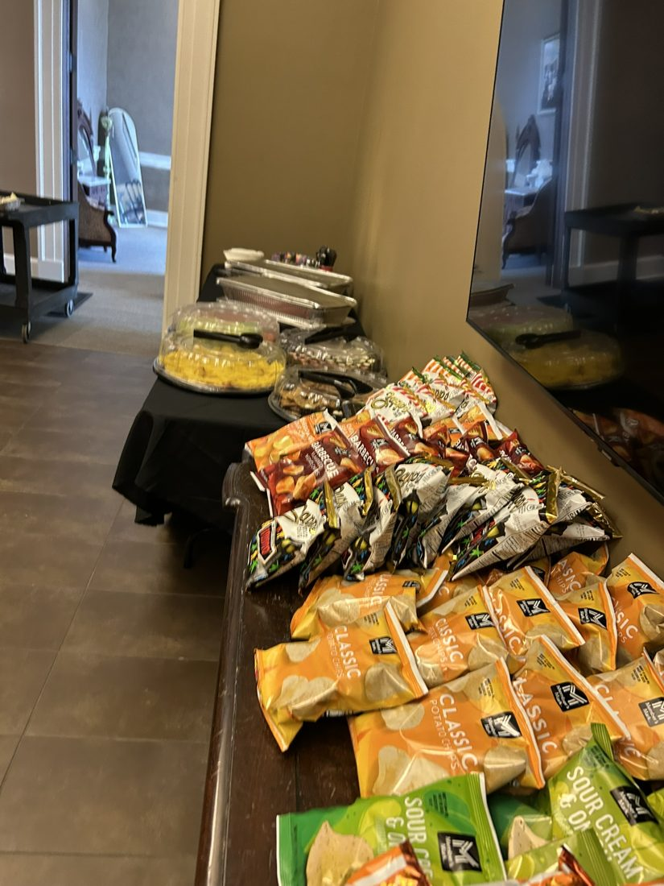
We believe great food brings people together. Homemade From the Heart Catering offers a variety of comforting homemade dishes for your gatherings and special occasions in Biloxi, Mississippi. Choose your favorites and let us help you plan a menu from the heart.
Create the perfect menu based on your item choices.
Planning a celebration or gathering? Contact us to discuss your menu and event needs.
Birthdays, reunions, showers, graduations and holiday gatherings.
Custom menu inquiries for meaningful occasions and receptions.
Breakfasts, luncheons, workplace gatherings and community events.
Event types and service arrangements are subject to confirmation when you request a quote.
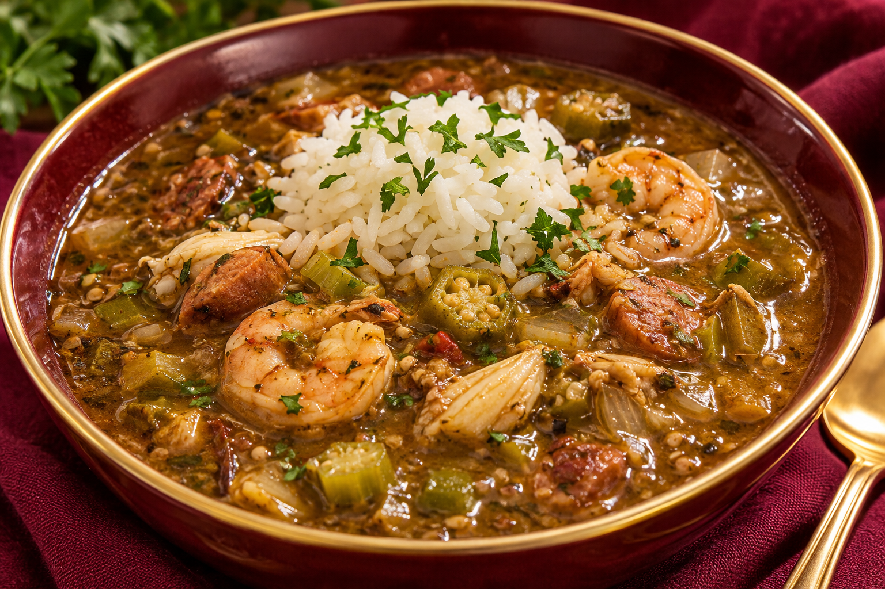
Made from scratch with authentic Gulf Coast flavors, seasoned with love, and served over rice.
Take a look at some of our homemade dishes and catering displays. Ask about menu availability when requesting a quote.
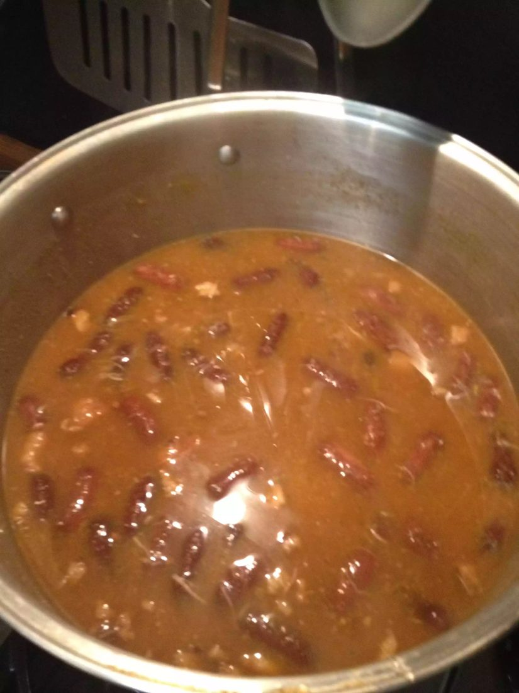
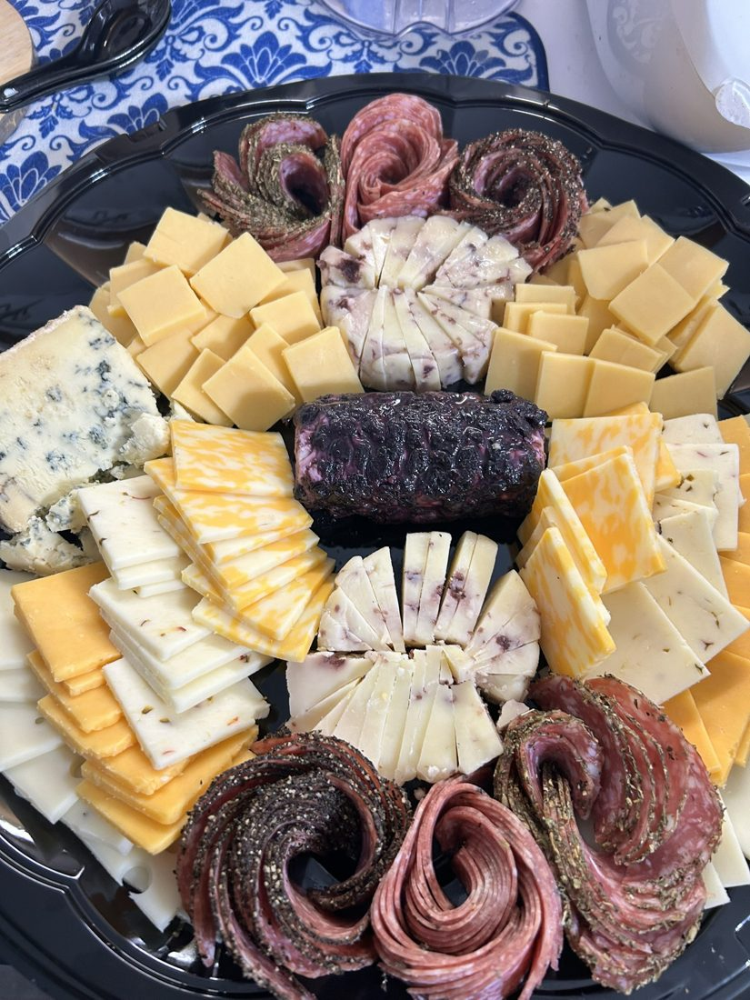
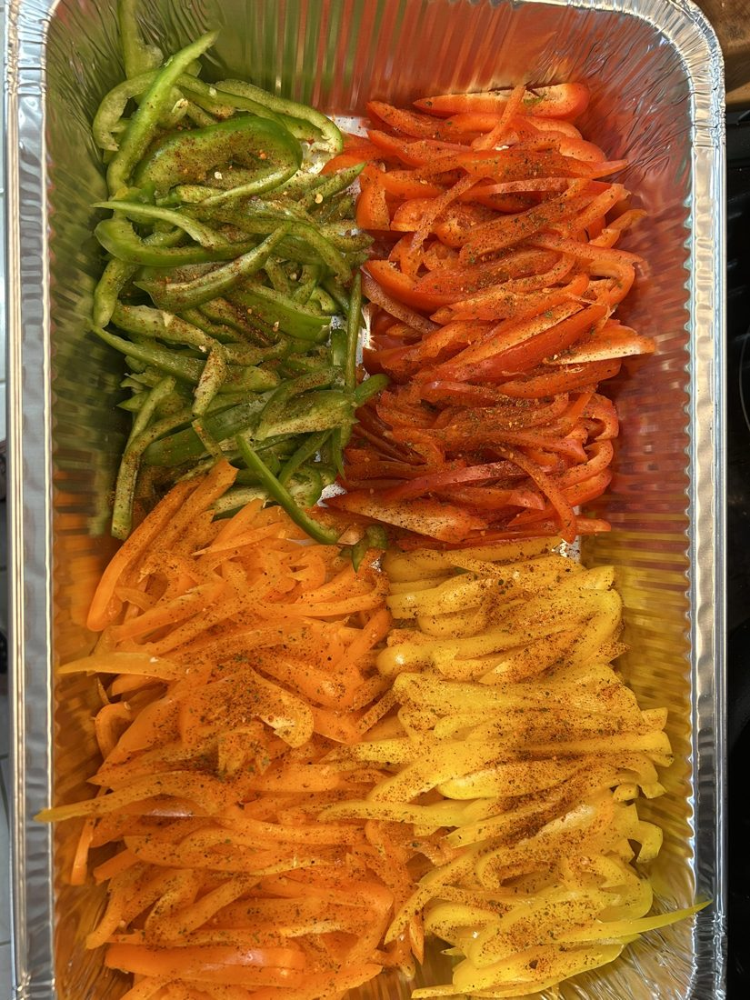
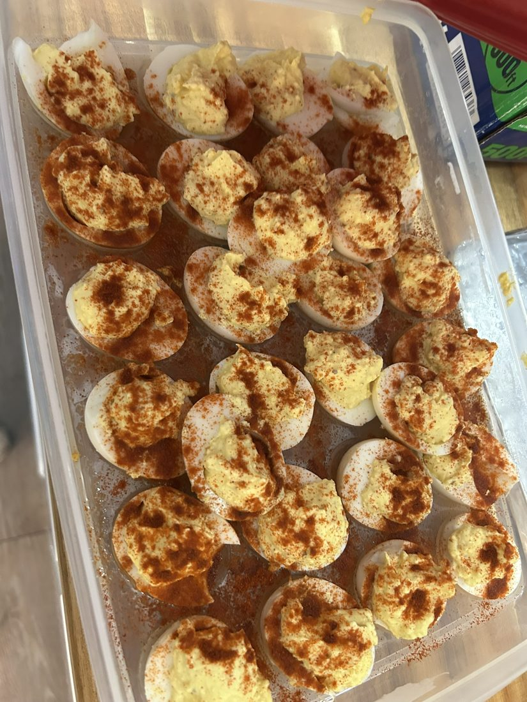
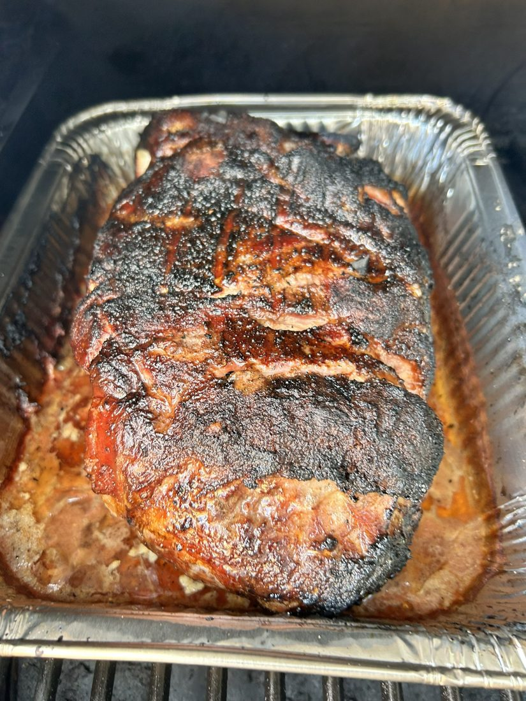
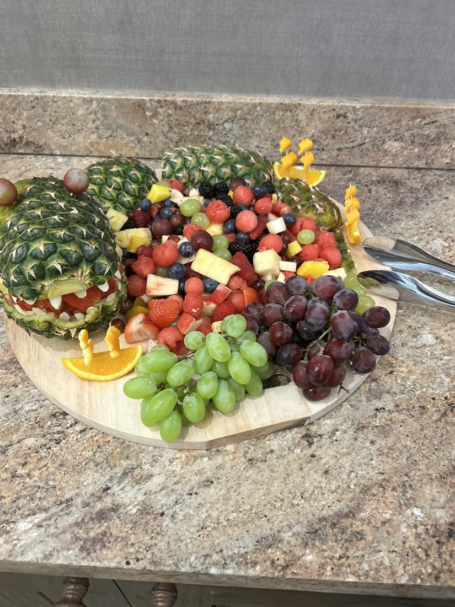
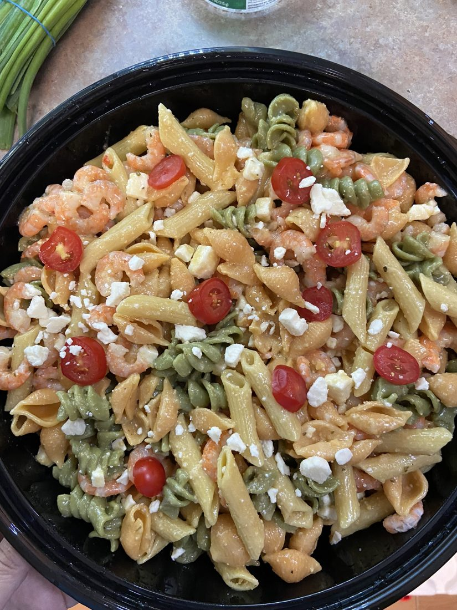
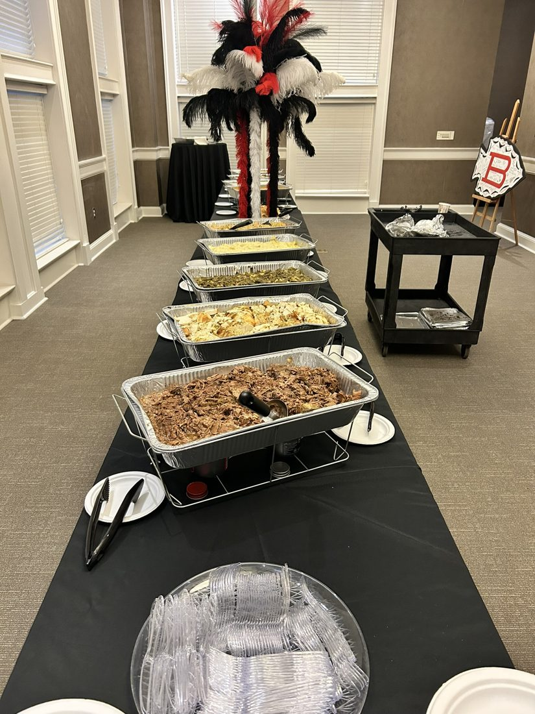
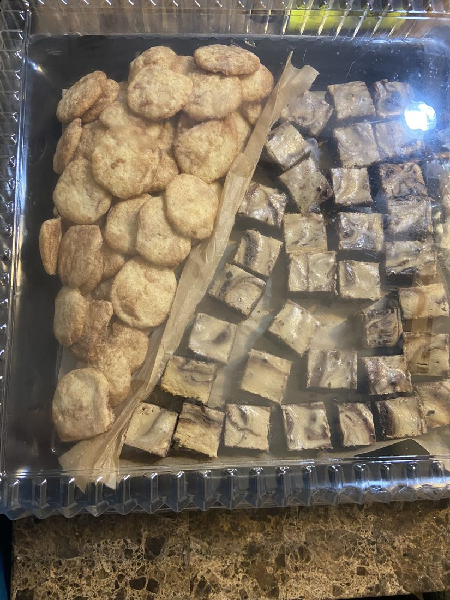
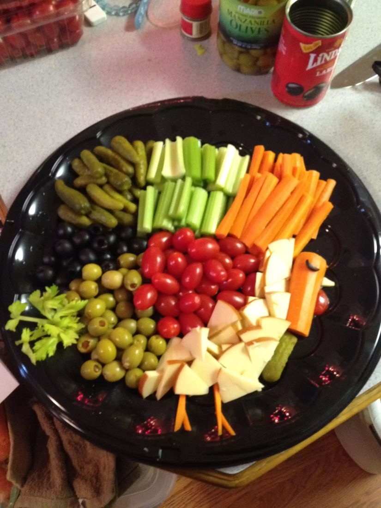
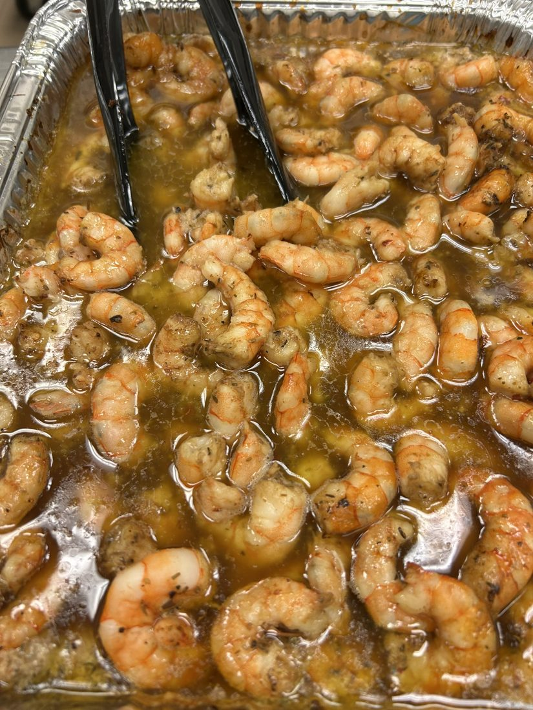
Complete the details and select your menu choices above. Clicking the button opens an email draft addressed to Homemade From the Heart Catering. Your request is not sent until you send the email.
Homemade From the Heart Catering
Biloxi, Mississippi
Contact: Dawn Ross
Phone: 228-818-7408
Email: dawnkyle9@gmail.com